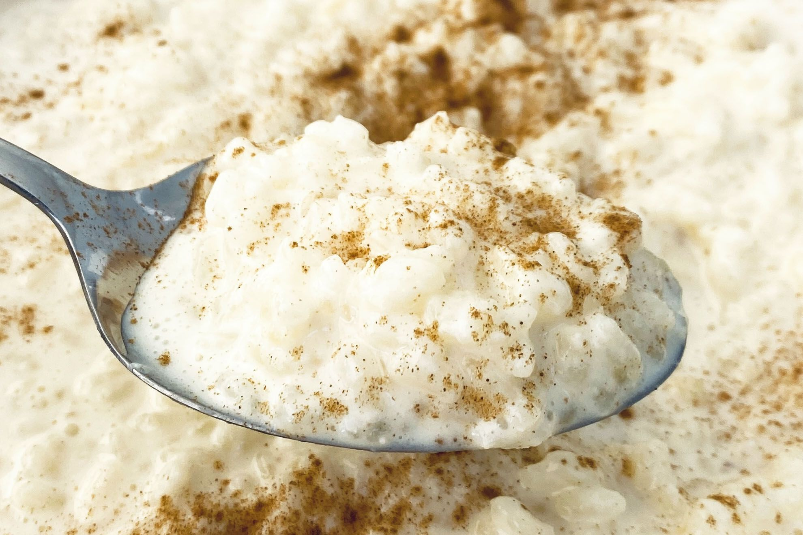

Creamy Rice Pudding

Rice pudding is a creamy mixture of rice and milk that is cooked until it's thick and soft. It can be sweet or savory. This raisin-studded dessert rice pudding is thickened with an egg, sweetened with sugar, and enhanced with vanilla
Ingredients
- Rice: This creamy rice pudding recipe starts with white rice cooked until tender.
- Milk: You'll need two cups of milk, divided
- Sugar: The rice pudding is sweetened with white sugar
- Salt: A pinch of salt enhances the flavor of the other ingredients, but it won't make the pudding taste salty.
- Egg An egg adds moisture and helps bind the pudding together.
- Raisins: Raisins lend bursts of fruity flavor
- Butter:Butter adds even more moisture and richness
- Vanilla:A dash of vanilla enhances the overall flavor of the rice pudding.
Steps
- Cook the rice.
- Cook the cooked rice, some of the milk, sugar, and salt over medium heat until thick.
- Stir in the remaining milk, egg, and raisins. Cook for two more minutes.
- Remove from heat and stir in the butter and vanilla.
HOME